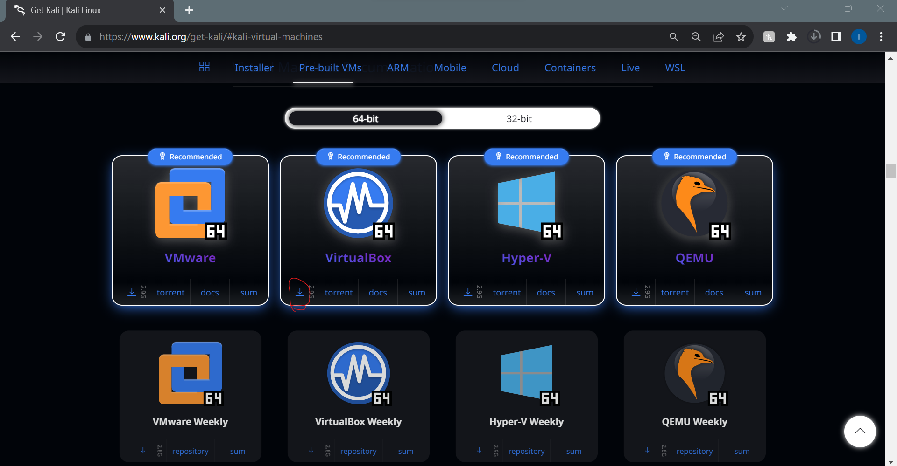

Installations#
There are two ways to run linux:
Virtual Machine
Hard Install on to your computer
We will use a virtual machine for this textbook.
Follow the following steps to do so:
Note: These steps have been adapted from The Odin Project. However, we make some important changes in this tutorial, so please follow along here.
Step 1: Download VirtualBox and Kali Linux#
Installing a VM is a simple process. This guide uses Oracle’s VirtualBox program to create and run the VM. This program is open-source, free, and simple. What more can you ask for? Now, let’s make sure we have everything downloaded and ready for installation.
Step 1.1: Download VirtualBox#
Click here and download VirtualBox for Windows hosts.
Step 1.2: Download Kali Linux#
Head over to the official kali download page for virtual machines.
You will see icons for downloading Kali images for differnet virtual machines, since we are using VirtualBox click on the icon circled in red:

Step 2: Install VirtualBox and set up Xubuntu#
Step 2.1: Install VirtualBox#
Installing VirtualBox is very straightforward. It doesn’t require much technical knowledge and is the same process as installing any other program. Double clicking the downloaded VirtualBox file will start the installation process.
Windows users - Errors:
If you receive an error about needing Microsoft Visual C++ 2019 Redistributable Package, you can find it on official Microsoft Learn page. You most likely want the version with X64 Architecture (that means 64-bit) - download and install it then try installing VirtualBox again.
Make sure you install the application on C: drive, as it has tendency to error out otherwise. The virtual machine itself can be installed anywhere but we’ll get to that soon.
As the software installs, the progress bar might appear to be stuck; just wait for it to finish.
Mac users - Errors:
If you run in to a message saying “installation failed” follow the instructions at 2:50 in the following video:
Step 2.2: Using VirtualBox with Kali Linux#
The nice thing about the wat we chose to download Kali Linux is that there arent oo many steps left before we can start working.
There are two steps you need:
launch the VirtualBox program. Once open, you should see the start screen.

Click on the Add button, navigate to the location you saved the unzipped download, and click the only file you see.
If you are sturggling with the installations, you can follow the offiical documentation.
Step 3: Logging In#
Once the operating systems finishes setting up, you should see a prompt for login information:
The default username and password are both kali.
Feel free to now enter full screen mode by pressing the view drop down menu and choosing Full-screen.

To exist full screen mode, click the Host key + f. The Host key is pre defined to be the *right Ctrl key on your keyboard.
Step 5: Safely shutting down your VM#
You don’t pull the plug on your everyday use computer, right? Why would you do the same to your virtual computer? When you click the X button and just close out your VM, you might as well say goodbye to your files. In this section, you’ll understand three ways you can shut off your VM.
Option 1 - Shutting down from inside the VM with UI#
Clicking the power icon will give you several options on how to modify your session, including Shutting Down.
The power icon is in the top right of your screen (circled in red):
Option 2 - Shutting down from inside the VM with the terminal#
Simply enough, typing poweroff will do in this case. Your system will immediately shutdown.
Option 3 - Shutting down from outside the VM#
The last way to accomplish this goal of safely shutting down is by using the VM interface. Clicking on the File tab and hitting the close button (which also has a Power Icon) will bring up a popup titled Close Virtual Machine. This popup asks if you want to Save the machine state, Send the shutdown signal, or Power off the machine.


To be safe, click the Send the shutdown signal radio and hit OK. This will safely power down your VM and your files will not get corrupted.